[4]:
import pandas as pd
import numpy as np
from raimitigations.utils import create_dummy_dataset
from raimitigations.dataprocessing import CorrelatedFeatures
Checking Correlations Between Variables - A Comprehensive Guide
This notebook was created to show how several use cases for the CorrelatedFeatures class. This class computes several correlation metrics for different types of correlations:
Numerical x Numerical;
Numerical x Categorical;
Categorical x Categorical.
To compute these correlations, it is necessary to call the .fit() method first. This method will be responsible for computing the different correlations metrics, which depend on the data type of each variable. After all computations (which may take a while depending on the correlation metrics chosen and the dataset size), three JSON files containing different summaries will be saved. The user can then open these JSON files and look into all correlation metrics by themselves, allowing them to use their domain knowledge to determine the best variables to be removed.
1 - Toy Dataset
First of all, we need a dataset with several correlated variables. Ideally, we need a dataset with pairs of numerical, numerical and categorical, and categorical correlated variables to test all this class has to offer. Since we don’t have such dataset at our disposal, we will create an artificial dataset with the desired characteristics. We will create a dataset with samples data points and n_features base features, where:
n_num_num new numerical features are created, where each new feature copies one of the n_features existing numerical features and then adds a noise over these original values. The standard deviation used for generating the noise is a random value between num_num_noise[0] and num_num_noise[1]. If the degree of the correlation between the two features depends on the standard deviation used for generating the noise;
n_cat_num new categorical features are created, where these new features are correlated to the existing numerical features in the dataset. The ith new categorical feature created will be correlated to the ith existing numerical feature of the dataset df. To force this correlation, the numerical feature will be categorized by creating bins, where the number of bins varies between 2 to 10. Each bin is associated with a categorical value. After that, we change a fraction of p bins by swapping the categorical value of some bins. Here, p is a value in the range [0,1] that is chosen to be between pct_change[0] and pct_change[1]. If the numerical feature selected is already correlated to another numerical feature, the new categorical feature could also be correlated to this second numerical feature.;
n_cat_cat new categorical features are created in a way similarly to the previous n_cat_num features. The ith new categorical feature here is created following the same logic explained above, and it is also correlated to the ith numerical feature of the dataset. This way, the ith categorical feature created between the n_cat_cat features will be correlated to the ith categorical feature created between the n_cat_num features, since both are correlated to the same numerical feature.
There is an inherent randomness associated with the creation process of this dataset. We can control the strength of these correlations by tuning the num_num_noise and pct_change parameters: lower values for both of these parameters results in variables with a higher correlation.
[5]:
df = create_dummy_dataset(
samples=3000,
n_features=6,
n_num_num=2,
n_cat_num=2,
n_cat_cat=2,
num_num_noise=[0.01, 0.05],
pct_change=[0.05, 0.1]
)
label_col = "label"
df
[5]:
| num_0 | num_1 | num_2 | num_3 | num_4 | num_5 | label | num_c0_num_0 | num_c1_num_1 | CN_0_num_0 | CN_1_num_1 | CC_0_num_0 | CC_1_num_1 | |
|---|---|---|---|---|---|---|---|---|---|---|---|---|---|
| 0 | -3.633724 | 2.402746 | 0.860549 | 4.033981 | -3.005298 | -3.279323 | 0 | -3.614031 | 2.414210 | val0_1 | val1_2 | val0_1 | val1_4 |
| 1 | 4.070874 | -2.146126 | 0.580270 | -2.836100 | -2.924647 | 2.463193 | 1 | 4.058100 | -2.148135 | val0_3 | val1_1 | val0_3 | val1_1 |
| 2 | 3.045077 | -0.783001 | 2.363379 | -4.038650 | -3.980719 | 1.706057 | 1 | 2.977632 | -0.772284 | val0_2 | val1_1 | val0_3 | val1_2 |
| 3 | 2.529509 | -2.821301 | 2.684528 | -2.816390 | -2.884799 | 2.691671 | 1 | 2.551148 | -2.817238 | val0_0 | val1_0 | val0_3 | val1_1 |
| 4 | -2.088423 | 1.341175 | -0.928002 | 2.481124 | -1.034721 | -0.633088 | 0 | -2.070140 | 1.340329 | val0_3 | val1_2 | val0_1 | val1_3 |
| ... | ... | ... | ... | ... | ... | ... | ... | ... | ... | ... | ... | ... | ... |
| 2995 | 1.135839 | -1.622574 | 4.121300 | -1.993871 | -0.507498 | 3.319100 | 1 | 1.114095 | -1.604495 | val0_2 | val1_1 | val0_2 | val1_2 |
| 2996 | 3.303470 | -2.597209 | 3.760176 | -4.244150 | -0.823886 | 2.335958 | 1 | 3.273267 | -2.601232 | val0_3 | val1_1 | val0_3 | val1_1 |
| 2997 | -3.998412 | 1.247457 | -0.784179 | 4.423204 | -2.921416 | -0.574877 | 0 | -3.992604 | 1.265720 | val0_1 | val1_2 | val0_1 | val1_3 |
| 2998 | -3.016525 | 2.105135 | -3.338568 | -0.411485 | -2.962806 | -1.573175 | 0 | -3.026858 | 2.118895 | val0_1 | val1_2 | val0_1 | val1_4 |
| 2999 | 0.222322 | 0.820921 | 4.687021 | -1.947313 | -4.065131 | 4.626776 | 1 | 0.194455 | 0.807191 | val0_2 | val1_2 | val0_2 | val1_3 |
3000 rows × 13 columns
2 - A Beginner User’s View of the CorrelatedFeatures class
Let’s consider the following scenario: a beginner data scientist wants to check for correlations within a dataset. But this data scientist doesn’t really understand how these correlations are measured, nor how to interpret them. Actually, this data scientist doesn’t even care for these details: its goal is to simply remove a set of features that are already explained well enough within other features, that is, the data scientist just wants to remove one feature for each pair of correlated features and reduce the overall number of features used in its training pipeline (if possible). This means that the data scientist isn’t interested in analyzing the JSON summary generated by the CorrelatedFeatures class: the goal is to simply remove a set of features that are correlated to other features.
The CorrelatedFeatures class was designed to perform all of these desired steps automatically. If the user doesn’t really understand what each parameter means, we set these parameters with default values capable of delivering reasonable results on the average case (depends on the dataset used). The only thing required is that the user instantiates the class (leave all parameters blank, that is, using their default values), call the fit method using their dataset, and then use the transform method to remove the unwanted columns of a second dataset (this second dataset could be the same used for the fit method or another dataset that has the same structure). The following code executes all of these steps.
[6]:
cor_feat = CorrelatedFeatures(save_json=False) # We setted this single parameter just to avoid creating json files for now
cor_feat.fit(df=df, label_col=label_col)
new_df = cor_feat.transform(df)
new_df
[6]:
| num_0 | num_2 | num_3 | num_4 | num_5 | CN_0_num_0 | CN_1_num_1 | CC_1_num_1 | label | |
|---|---|---|---|---|---|---|---|---|---|
| 0 | -3.633724 | 0.860549 | 4.033981 | -3.005298 | -3.279323 | val0_1 | val1_2 | val1_4 | 0 |
| 1 | 4.070874 | 0.580270 | -2.836100 | -2.924647 | 2.463193 | val0_3 | val1_1 | val1_1 | 1 |
| 2 | 3.045077 | 2.363379 | -4.038650 | -3.980719 | 1.706057 | val0_2 | val1_1 | val1_2 | 1 |
| 3 | 2.529509 | 2.684528 | -2.816390 | -2.884799 | 2.691671 | val0_0 | val1_0 | val1_1 | 1 |
| 4 | -2.088423 | -0.928002 | 2.481124 | -1.034721 | -0.633088 | val0_3 | val1_2 | val1_3 | 0 |
| ... | ... | ... | ... | ... | ... | ... | ... | ... | ... |
| 2995 | 1.135839 | 4.121300 | -1.993871 | -0.507498 | 3.319100 | val0_2 | val1_1 | val1_2 | 1 |
| 2996 | 3.303470 | 3.760176 | -4.244150 | -0.823886 | 2.335958 | val0_3 | val1_1 | val1_1 | 1 |
| 2997 | -3.998412 | -0.784179 | 4.423204 | -2.921416 | -0.574877 | val0_1 | val1_2 | val1_3 | 0 |
| 2998 | -3.016525 | -3.338568 | -0.411485 | -2.962806 | -1.573175 | val0_1 | val1_2 | val1_4 | 0 |
| 2999 | 0.222322 | 4.687021 | -1.947313 | -4.065131 | 4.626776 | val0_2 | val1_2 | val1_3 | 1 |
3000 rows × 9 columns
As we can see, we easily instantiated the class, called the fit method, and finally transformed our data set using the transform method. Consider now that we managed to train a model using the selected features and created an API to run the model in a production pipeline. Now, each week a new dataset similar to the one we used is fetched and must be fed to the model. But the dataset arrives with the original columns. First, we need to remove the unwanted columns, similar to what we did previously. To do that, we just call the transform method over the new dataset.
3 - An Intermediate User’s View of the CorrelatedFeatures class
Let us now consider the scenario where an intermediate data scientist wants to use the CorrelatedFeatures class. This user knows something about correlation metrics, so they will be interested in adjusting some parameters. They also have the domain knowledge of the dataset, allowing them to imbue some of this knowledge when using the CorrelatedFeatures class.
First of all, we need to instantiate the class. Since the user is more experienced, they decided that they want to use:
Pearson, Spearman, and Kendall-tau to measure the correlation between numerical features, with a threshold of 0.8 for both metrics and a p-value threshold of 0.01, that is, only correlations with a p-value smaller than 0.01 and a correlation coefficient greater than 0.8 (for all metrics: Pearson, Spearman, and Kendall) are considered a high correlation;
To measure the correlation between both categorical variables, the user wants to use Cramer’s V test with a correlation metric threshold of 0.9 and a p-value threshold of 0.05, that is, only correlations greater than 0.9 with a p-value lesser than 0.01 are considered a high correlation;
Through the users domain knowledge of the dataset, they know that it makes no sense to test the correlation between a numerical feature and a categorical feature. Therefore, the user disables the correlation checks for numerical x categorical features by setting method_num_cat = None;
Also using their domain knowledge, the user wants to test the correlation only between a set of variables of the dataset, that being: [num_0, num_4, CN_0_num_0, CC_1_num_1]’. The other variables shouldn’t be checked for correlations.
The following cell shows how this user could perform the tasks mentioned above using the CorrelatedFeatures class:
[7]:
cor_feat = CorrelatedFeatures(
cor_features=["num_0", "num_4", "CN_0_num_0", "CC_1_num_1"],
method_num_num=["spearman", "pearson", "kendall"],
num_corr_th=0.8,
num_pvalue_th=0.01,
method_num_cat=None,
cat_corr_th=0.9,
cat_pvalue_th=0.05,
save_json=False
)
cor_feat.fit(df=df, label_col=label_col)
new_df = cor_feat.transform(df)
new_df
No correlations detected. Nothing to be done here.
[7]:
| num_0 | num_1 | num_2 | num_3 | num_4 | num_5 | num_c0_num_0 | num_c1_num_1 | CN_0_num_0 | CN_1_num_1 | CC_0_num_0 | CC_1_num_1 | label | |
|---|---|---|---|---|---|---|---|---|---|---|---|---|---|
| 0 | -3.633724 | 2.402746 | 0.860549 | 4.033981 | -3.005298 | -3.279323 | -3.614031 | 2.414210 | val0_1 | val1_2 | val0_1 | val1_4 | 0 |
| 1 | 4.070874 | -2.146126 | 0.580270 | -2.836100 | -2.924647 | 2.463193 | 4.058100 | -2.148135 | val0_3 | val1_1 | val0_3 | val1_1 | 1 |
| 2 | 3.045077 | -0.783001 | 2.363379 | -4.038650 | -3.980719 | 1.706057 | 2.977632 | -0.772284 | val0_2 | val1_1 | val0_3 | val1_2 | 1 |
| 3 | 2.529509 | -2.821301 | 2.684528 | -2.816390 | -2.884799 | 2.691671 | 2.551148 | -2.817238 | val0_0 | val1_0 | val0_3 | val1_1 | 1 |
| 4 | -2.088423 | 1.341175 | -0.928002 | 2.481124 | -1.034721 | -0.633088 | -2.070140 | 1.340329 | val0_3 | val1_2 | val0_1 | val1_3 | 0 |
| ... | ... | ... | ... | ... | ... | ... | ... | ... | ... | ... | ... | ... | ... |
| 2995 | 1.135839 | -1.622574 | 4.121300 | -1.993871 | -0.507498 | 3.319100 | 1.114095 | -1.604495 | val0_2 | val1_1 | val0_2 | val1_2 | 1 |
| 2996 | 3.303470 | -2.597209 | 3.760176 | -4.244150 | -0.823886 | 2.335958 | 3.273267 | -2.601232 | val0_3 | val1_1 | val0_3 | val1_1 | 1 |
| 2997 | -3.998412 | 1.247457 | -0.784179 | 4.423204 | -2.921416 | -0.574877 | -3.992604 | 1.265720 | val0_1 | val1_2 | val0_1 | val1_3 | 0 |
| 2998 | -3.016525 | 2.105135 | -3.338568 | -0.411485 | -2.962806 | -1.573175 | -3.026858 | 2.118895 | val0_1 | val1_2 | val0_1 | val1_4 | 0 |
| 2999 | 0.222322 | 0.820921 | 4.687021 | -1.947313 | -4.065131 | 4.626776 | 0.194455 | 0.807191 | val0_2 | val1_2 | val0_2 | val1_3 | 1 |
3000 rows × 13 columns
We can retrieve the selected features by calling the get_selected_features method:
[8]:
cor_feat.get_selected_features()
[8]:
['num_0',
'num_1',
'num_2',
'num_3',
'num_4',
'num_5',
'num_c0_num_0',
'num_c1_num_1',
'CN_0_num_0',
'CN_1_num_1',
'CC_0_num_0',
'CC_1_num_1']
4 - A Pro User’s View of the CorrelatedFeatures class
Let us now consider the scenario where a pro data scientist wants to use the CorrelatedFeatures class to compute different correlation metrics. In contrast to the previous scenarios, this user doesn’t want to rely on the class to automatically select the best features. Instead, the user wants to access all correlation metrics computed, even those for pairs of variables defined as not correlated. To this end, the user can use the get_summary method, which returns 3 JSON files:
Full Summary: when calling the fit method, all correlations will be computed according to the many parameters detailed previously. After computing all these data, everything is saved in a JSON file, which can then be accessed and analyzed carefully. We recommend using a JSON viewing tool for this. This JSON is saved in the file specified by the parameter json_summary;
Correlated JSON: similar to the full summary, but stores only information of pairs of correlated variables (with no repetitions). This JSON is saved in the file specified by the parameter json_corr;
Uncorrelated JSON: similar to the full summary, but stores only information of pairs of uncorrelated variables (with no repetitions). This JSON is saved in the file specified by the parameter json_uncorr;
Also, the user will use the “model” method for computing the correlations between numerical and categorical variables. For each pair of numerical and categorical variables, this approach does the following: trains a simple decision tree using the numerical variable and predicts the categorical variable. Both variables are first divided into a training and test set (70% and 30% of the size of the original variables, respectively). The training set is used to train the decision tree, where the only feature used by the model is the numerical variable and the predicted label are the different values within the categorical variable. After trained, the model is to predict the values of the test set and a set of metrics are computed to assess the performance of the model (the metrics computed are defined by the model_metrics parameter). If all metrics computed are above the threshold defined by the metric_th parameter, then both variables are considered to be correlated. Here, we will use F1 and Accuracy as the evaluation metrics, both with a threshold of 0.9.
Finally, the user wants to save the resulting JSON files in the folder “./corr_json_examples”. To do this, we use the json_summary, json_corr, and json_uncorr parameters to specify the path to the json files.
[9]:
cor_feat = CorrelatedFeatures(
method_num_num=["spearman", "pearson", "kendall"], # Used for Numerical x Numerical correlations
num_corr_th=0.8, # Used for Numerical x Numerical correlations
num_pvalue_th=0.01, # Used for Numerical x Numerical correlations
method_num_cat="model", # Used for Numerical x Categorical correlations
model_metrics=["f1"], # Used for Numerical x Categorical correlations
metric_th=0.9, # Used for Numerical x Categorical correlations
cat_corr_th=0.8, # Used for Categorical x Categorical correlations
cat_pvalue_th=0.01, # Used for Categorical x Categorical correlations
json_summary="./corr_json_examples/1_summary_model.json",
json_corr="./corr_json_examples/1_corr_model.json",
json_uncorr="./corr_json_examples/1_uncorr_model.json"
)
cor_feat.fit(df=df, label_col=label_col)
[9]:
<raimitigations.dataprocessing.feat_selection.correlated_features.CorrelatedFeatures at 0x7fefe89991f0>
We can now go on and check the resulting JSON files. We recommend using a JSON file viewing tool to check the results. We used the JSON Viewer tool from Visual Studio.
Full Summary
First, let’s take a look at the full summary JSON file. When we open this file with the JSON Viewer, we get the following:
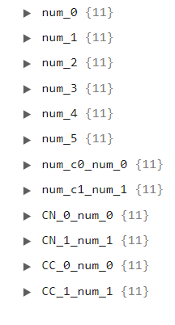
This shows one primary key for each variable in the dataset. When we click on one of these keys, we will see a list of secondary keys made up by all variables in the dataset not including the variable being analyzed (the primary key), as the follow image shows:
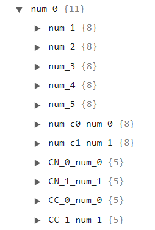
Each secondary key holds a summary of the correlation metrics computed for the pair A X B, where A is the primary key and B is the secondary key. If we click on one of these secondary keys, we can check the type of correlation (numerical x numerical, numerical x categorical, or categorical x categorical), the correlation metrics (depends on the type of the correlation and the methods used to compute this type of correlation), the thresholds used, the number of exact matches between the two variables, and if they are correlated or not. In the following image, we can see an example for a numerical x numerical correlation type, where we used all three numerical correlation metrics: Spearman, Pearson, and Kendall. Therefore, we have a third-level key for each of these correlations, each one providing the info the user needs.
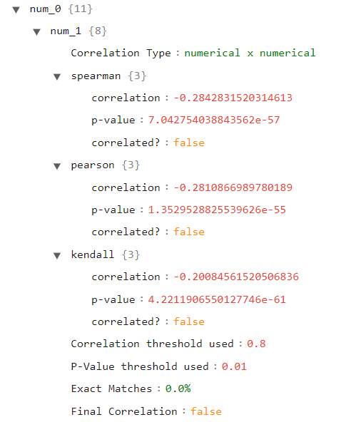
If we select a categorical variable for our secondary key, we will notice that the type is different, as well as the correlation results. Since we used the “model” approach for numerical x categorical correlations, we have here the results of the model trained using the numerical variable that predicts the categorical one.
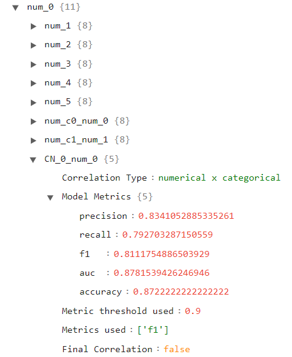
Finally, let’s open a categorical variable as our primary and secondary keys, as depicted in the following image:
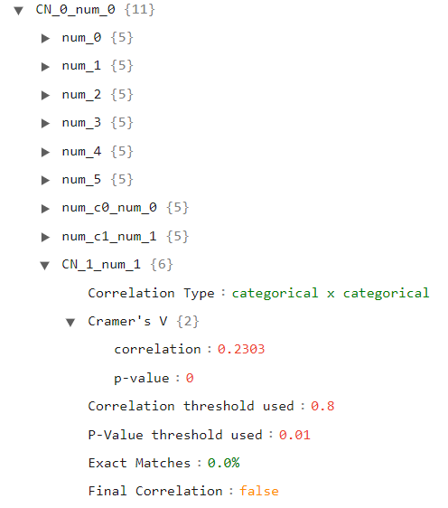
Here we can see the results for the Cramer’s V test used for this type of correlation.
Correlated Summary
Now we will take a look at the correlated summary, which shows only the results for the correlated variables (that is, the pairs of variables that passed the correlation thresholds defined by the different parameters). The following image shows this JSON file:
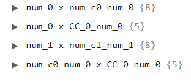
The main difference here is that the primary keys are variable pairs instead of a single variable. Since we have only 4 primary keys, then there are only 4 correlated pairs of variables in our dataset. If we click over the pair A x B of these pairs, we will notice that the contents inside this key are exactly the same in the full summary under the primary key A and secondary key B. Therefore, this summary doesn’t add any new information in comparison to the previous JSON file. Its advantage is that it only shows the information for correlated features.
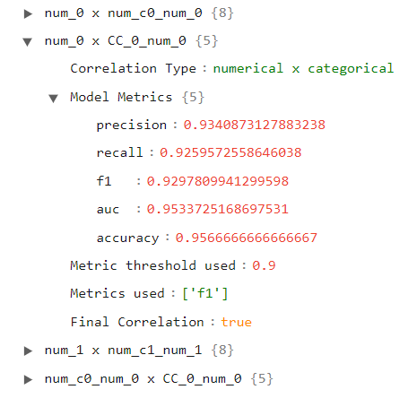 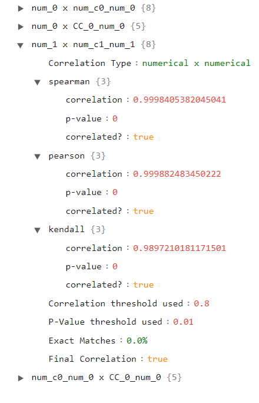
Uncorrelated Summary
The final JSON file is very similar to the correlated summary, but instead of showing only the correlated pairs, it shows only the pairs considered NOT correlated. As we can see in the following image, this file is larger than the previous one (for this dataset), because there are many more pairs of uncorrelated variables than pairs of correlated variables.
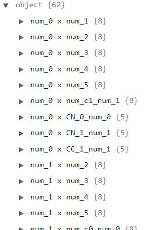 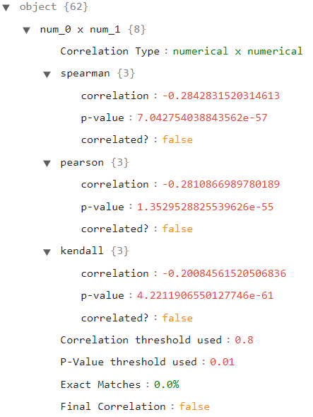 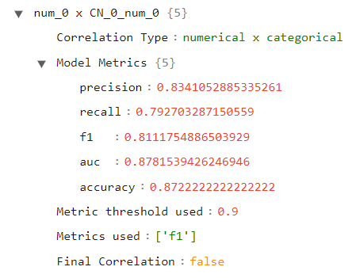 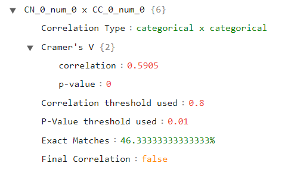
Setting the selected features manually
After looking over all of these different results, the user will decide by themselves which variables are the best ones to keep. They can then call the set_selected_features method and provide it a list with the selected columns. This will override the list of selected features defined automatically by the class. After that, the user can simply call the transform method normally to remove the unwanted features.
[10]:
features_manual = ["num_0", "num_1", "num_2", "num_3", "num_4", "CN_0_num_0", "CC_1_num_1"]
cor_feat.set_selected_features(features_manual)
new_df = cor_feat.transform(df)
new_df
[10]:
| num_0 | num_1 | num_2 | num_3 | num_4 | CN_0_num_0 | CC_1_num_1 | label | |
|---|---|---|---|---|---|---|---|---|
| 0 | -3.633724 | 2.402746 | 0.860549 | 4.033981 | -3.005298 | val0_1 | val1_4 | 0 |
| 1 | 4.070874 | -2.146126 | 0.580270 | -2.836100 | -2.924647 | val0_3 | val1_1 | 1 |
| 2 | 3.045077 | -0.783001 | 2.363379 | -4.038650 | -3.980719 | val0_2 | val1_2 | 1 |
| 3 | 2.529509 | -2.821301 | 2.684528 | -2.816390 | -2.884799 | val0_0 | val1_1 | 1 |
| 4 | -2.088423 | 1.341175 | -0.928002 | 2.481124 | -1.034721 | val0_3 | val1_3 | 0 |
| ... | ... | ... | ... | ... | ... | ... | ... | ... |
| 2995 | 1.135839 | -1.622574 | 4.121300 | -1.993871 | -0.507498 | val0_2 | val1_2 | 1 |
| 2996 | 3.303470 | -2.597209 | 3.760176 | -4.244150 | -0.823886 | val0_3 | val1_1 | 1 |
| 2997 | -3.998412 | 1.247457 | -0.784179 | 4.423204 | -2.921416 | val0_1 | val1_3 | 0 |
| 2998 | -3.016525 | 2.105135 | -3.338568 | -0.411485 | -2.962806 | val0_1 | val1_4 | 0 |
| 2999 | 0.222322 | 0.820921 | 4.687021 | -1.947313 | -4.065131 | val0_2 | val1_3 | 1 |
3000 rows × 8 columns
Using the Jensen-Shannon approach for numerical x categorical correlations
The following cell shows how to use the Jensen-Shannon approach for numerical x categorical correlations. For a given pair A, B, where A is a numerical feature and B is a categorical feature, this approach does the following: first we cluster the numerical values of A according to their respective values of the categorical data B. We then compute the probability density function of the numerical variable for each cluster (we approximate the PDF with the histogram using jensen_n_bins different bins). The next step is to compute the Jensen-Shannon Distance metric between the distribution functions of each pair of clusters. This distance metric varies from 0 to 1, where values closer to 0 means that both distributions tested are similar and values closer to 1 means that the distributions are different. If all pairs of distributions tested are considered different (a Jensen-Shannon metric above jensen_th for all pairs tested), then both variables are considered to be correlated.
Here we also present another parameter: the tie_method. Whenever a pair of variables is considered correlated, we must choose one of them to remove from the dataset. The first priority is to remove the variables with the most number of correlations. After computing all correlations, we build a graph G = (V, E) with a set of vertices V and a set of edges E. We create one vertex for each variable and one edge for each pair of correlated variables. We then compute the degree of all variables. The next step is to analyze each edge: for each edge, we remove the vertex with the highest degree. If both vertices have the same degree, then we use a tie method, which can be the following:
“missing”: chooses the variable with the least number of missing values;
“var”: chooses the variable with the largest data dispersion (std / (V - v), where std is the standard deviation of the variable, V and v are the maximum and minimum values observed in the variable, respectively). Works only for numerical x numerical analysis. Otherwise, it uses the cardinality approach internally;
“cardinality”:chooses the variable with the most number of different values present;
In all three cases, if both variables are tied (same dispersion, same number of missing values, or same cardinality), the variable to be removed will be selected randomly. When we remove a variable, we remove its associated vertex and all of its edges. We then recompute the degree of all variables again, and repeat this process until no edges are left.
Finally, we also call the get_summary method, which returns the full, correlated, and uncorrelated JSONs as a dictionary. This method will also print out all of the information contained in the full summary dictionary. If the user doesn’t want this method to print anything, they can just set the print_summary parameter to False (it is set to True by default).
[11]:
cor_feat = CorrelatedFeatures(
method_num_num=["kendall"],
num_corr_th=0.8,
num_pvalue_th=0.01,
method_num_cat="jensen",
jensen_n_bins=None, # use the Freedman Diaconis rule to compute this for each numerical variable
jensen_th=0.8,
tie_method="var",
json_summary="./corr_json_examples/2_summary_jensen.json",
json_corr="./corr_json_examples/2_corr_jensen.json",
json_uncorr="./corr_json_examples/2_uncorr_jensen.json"
)
cor_feat.fit(df=df, label_col=label_col)
full_sum, cor_sum, uncor_sum = cor_feat.get_summary()
cor_feat.get_selected_features()
CORRELATION SUMMARY
1 - num_0 x num_c0_num_0:
* kendall correlation = 0.9911254862732022 with a p-value of 0.0
2 - num_0 x CC_0_num_0:
Jensen-Shannon results:
jensen val0_1 x val0_3 = 0.9887453820753916
jensen val0_1 x val0_2 = 0.980515389122213
jensen val0_1 x val0_4 = 0.9829295554361851
jensen val0_1 x val0_0 = 0.9753239770250397
jensen val0_3 x val0_2 = 0.9535848025138043
jensen val0_3 x val0_4 = 0.9679167353417252
jensen val0_3 x val0_0 = 1.0
jensen val0_2 x val0_4 = 0.9999999999999998
jensen val0_2 x val0_0 = 0.9784703332107834
jensen val0_4 x val0_0 = 0.9999999999999999
3 - num_1 x num_c1_num_1:
* kendall correlation = 0.9958648438368345 with a p-value of 0.0
4 - num_1 x CN_1_num_1:
Jensen-Shannon results:
jensen val1_2 x val1_1 = 0.9522839497552043
jensen val1_2 x val1_0 = 0.9406072818586725
jensen val1_1 x val1_0 = 0.9423753807964595
5 - num_1 x CC_1_num_1:
Jensen-Shannon results:
jensen val1_4 x val1_1 = 0.9921670954590563
jensen val1_4 x val1_2 = 0.9806319139683849
jensen val1_4 x val1_3 = 0.9972634483088438
jensen val1_4 x val1_0 = 0.9921081365397866
jensen val1_1 x val1_2 = 0.9896882445150822
jensen val1_1 x val1_3 = 0.9818537257183299
jensen val1_1 x val1_0 = 0.9747356517735813
jensen val1_2 x val1_3 = 0.9816925909195027
jensen val1_2 x val1_0 = 0.953653002378941
jensen val1_3 x val1_0 = 0.9838589265742761
6 - num_c0_num_0 x CC_0_num_0:
Jensen-Shannon results:
jensen val0_1 x val0_3 = 0.9887174636229105
jensen val0_1 x val0_2 = 0.979427007131646
jensen val0_1 x val0_4 = 0.9835188911727852
jensen val0_1 x val0_0 = 0.9845989562241892
jensen val0_3 x val0_2 = 0.9501804833339258
jensen val0_3 x val0_4 = 0.9706558303086583
jensen val0_3 x val0_0 = 1.0
jensen val0_2 x val0_4 = 1.0
jensen val0_2 x val0_0 = 0.97835113989048
jensen val0_4 x val0_0 = 1.0
7 - num_c1_num_1 x CN_1_num_1:
Jensen-Shannon results:
jensen val1_2 x val1_1 = 0.9481805344702415
jensen val1_2 x val1_0 = 0.9397837379687511
jensen val1_1 x val1_0 = 0.9324587310933975
8 - num_c1_num_1 x CC_1_num_1:
Jensen-Shannon results:
jensen val1_4 x val1_1 = 0.9916200207759064
jensen val1_4 x val1_2 = 0.9783059286623595
jensen val1_4 x val1_3 = 0.9918023570951998
jensen val1_4 x val1_0 = 0.9921081365397866
jensen val1_1 x val1_2 = 0.9745567440764196
jensen val1_1 x val1_3 = 0.9813046568867345
jensen val1_1 x val1_0 = 0.9676311885454256
jensen val1_2 x val1_3 = 0.9721611862753942
jensen val1_2 x val1_0 = 0.9537569478796816
jensen val1_3 x val1_0 = 0.9840043798233217
9 - CN_0_num_0 x CC_0_num_0:
* Cramer's V = 0.8796 with a p-value of 0.0
NOT CORRELATED VARIABLES SUMMARY
num_0 x num_1:
* kendall correlation = -0.4134747137934867 with a p-value of 1.1947780382366597e-252
num_0 x num_2:
* kendall correlation = 0.2370381238190508 with a p-value of 2.247652578766561e-84
num_0 x num_3:
* kendall correlation = -0.6197656996776704 with a p-value of 0.0
num_0 x num_4:
* kendall correlation = 0.17180260086695567 with a p-value of 3.4490184419693836e-45
num_0 x num_5:
* kendall correlation = 0.3512722018450595 with a p-value of 6.1787944029726694e-183
num_0 x num_c1_num_1:
* kendall correlation = -0.4132830943647883 with a p-value of 2.0390357962426037e-252
num_0 x CN_0_num_0:
Jensen-Shannon results:
jensen val0_1 x val0_3 = 0.9437360334295508
jensen val0_1 x val0_2 = 0.9077963559621397
jensen val0_1 x val0_0 = 0.9082308609152894
jensen val0_1 x val0_4 = 0.9189629641371316
jensen val0_3 x val0_2 = 0.9148016405386064
jensen val0_3 x val0_0 = 0.7772396799136823
jensen val0_3 x val0_4 = 0.7839455884573594
jensen val0_2 x val0_0 = 0.8310653822591118
jensen val0_2 x val0_4 = 0.8321644270841596
jensen val0_0 x val0_4 = 0.857754719645692
num_0 x CN_1_num_1:
Jensen-Shannon results:
jensen val1_2 x val1_1 = 0.726280836862888
jensen val1_2 x val1_0 = 0.796107681334901
jensen val1_1 x val1_0 = 0.23254638182905546
num_0 x CC_1_num_1:
Jensen-Shannon results:
jensen val1_4 x val1_1 = 0.8959709314437776
jensen val1_4 x val1_2 = 0.8498390930628881
jensen val1_4 x val1_3 = 0.47679874640369924
jensen val1_4 x val1_0 = 0.9114638733684707
jensen val1_1 x val1_2 = 0.18524307066871662
jensen val1_1 x val1_3 = 0.6166234321285071
jensen val1_1 x val1_0 = 0.19654665415639078
jensen val1_2 x val1_3 = 0.535185427805923
jensen val1_2 x val1_0 = 0.2944395703077935
jensen val1_3 x val1_0 = 0.6729640355529796
num_1 x num_2:
* kendall correlation = -0.32227097921529396 with a p-value of 2.6673041511070648e-154
num_1 x num_3:
* kendall correlation = 0.349947760364566 with a p-value of 1.4197969546162532e-181
num_1 x num_4:
* kendall correlation = -0.3777388018228298 with a p-value of 3.248491304567044e-211
num_1 x num_5:
* kendall correlation = -0.2729536512170724 with a p-value of 2.982320155993825e-111
num_1 x num_c0_num_0:
* kendall correlation = -0.4132795376236523 with a p-value of 2.0593618047466733e-252
num_1 x CN_0_num_0:
Jensen-Shannon results:
jensen val0_1 x val0_3 = 0.8486970895185041
jensen val0_1 x val0_2 = 0.6811124487208922
jensen val0_1 x val0_0 = 0.4343522683622511
jensen val0_1 x val0_4 = 0.8101233307399008
jensen val0_3 x val0_2 = 0.2903377144099186
jensen val0_3 x val0_0 = 0.7450649102212251
jensen val0_3 x val0_4 = 0.2620245989488226
jensen val0_2 x val0_0 = 0.6194333047734312
jensen val0_2 x val0_4 = 0.35163552358060807
jensen val0_0 x val0_4 = 0.7168387362187111
num_1 x CC_0_num_0:
Jensen-Shannon results:
jensen val0_1 x val0_3 = 0.9061868453642743
jensen val0_1 x val0_2 = 0.7321461796993283
jensen val0_1 x val0_4 = 0.9363124266931192
jensen val0_1 x val0_0 = 0.3873614697219566
jensen val0_3 x val0_2 = 0.3130189141461298
jensen val0_3 x val0_4 = 0.27219390688927736
jensen val0_3 x val0_0 = 0.976803647282038
jensen val0_2 x val0_4 = 0.4615245787681402
jensen val0_2 x val0_0 = 0.8467957194063694
jensen val0_4 x val0_0 = 0.9883884247446088
num_2 x num_3:
* kendall correlation = -0.47331154829387573 with a p-value of 0.0
num_2 x num_4:
* kendall correlation = 0.1330910303434478 with a p-value of 8.453704601666924e-28
num_2 x num_5:
* kendall correlation = 0.414704012448594 with a p-value of 3.850318169428044e-254
num_2 x num_c0_num_0:
* kendall correlation = 0.23745737468044903 with a p-value of 1.1474170643256478e-84
num_2 x num_c1_num_1:
* kendall correlation = -0.32212381905079474 with a p-value of 3.67370006152722e-154
num_2 x CN_0_num_0:
Jensen-Shannon results:
jensen val0_1 x val0_3 = 0.7145318844586063
jensen val0_1 x val0_2 = 0.5784282637924207
jensen val0_1 x val0_0 = 0.3421720944432902
jensen val0_1 x val0_4 = 0.6502832117518021
jensen val0_3 x val0_2 = 0.22842223180493243
jensen val0_3 x val0_0 = 0.6186423495802952
jensen val0_3 x val0_4 = 0.2617648726237624
jensen val0_2 x val0_0 = 0.49932602859451153
jensen val0_2 x val0_4 = 0.27955516042664474
jensen val0_0 x val0_4 = 0.5668878351205063
num_2 x CN_1_num_1:
Jensen-Shannon results:
jensen val1_2 x val1_1 = 0.7547717447994049
jensen val1_2 x val1_0 = 0.7436545288966975
jensen val1_1 x val1_0 = 0.11008928002924181
num_2 x CC_0_num_0:
Jensen-Shannon results:
jensen val0_1 x val0_3 = 0.7561037993507042
jensen val0_1 x val0_2 = 0.6184574017994043
jensen val0_1 x val0_4 = 0.737682586798462
jensen val0_1 x val0_0 = 0.29498827318469983
jensen val0_3 x val0_2 = 0.24043103487383843
jensen val0_3 x val0_4 = 0.24431785941154108
jensen val0_3 x val0_0 = 0.8256447332302563
jensen val0_2 x val0_4 = 0.3296668536696856
jensen val0_2 x val0_0 = 0.7052738484932151
jensen val0_4 x val0_0 = 0.7955092158626509
num_2 x CC_1_num_1:
Jensen-Shannon results:
jensen val1_4 x val1_1 = 0.840806672064742
jensen val1_4 x val1_2 = 0.8234079312511376
jensen val1_4 x val1_3 = 0.3606006292414508
jensen val1_4 x val1_0 = 0.8397794293246038
jensen val1_1 x val1_2 = 0.09815460327314883
jensen val1_1 x val1_3 = 0.59457774434621
jensen val1_1 x val1_0 = 0.20247854790741815
jensen val1_2 x val1_3 = 0.5750071083636243
jensen val1_2 x val1_0 = 0.17556165715873104
jensen val1_3 x val1_0 = 0.5983546984846957
num_3 x num_4:
* kendall correlation = -0.07509569856618872 with a p-value of 6.99753016894564e-10
num_3 x num_5:
* kendall correlation = -0.3019410914749361 with a p-value of 1.0792686076772776e-135
num_3 x num_c0_num_0:
* kendall correlation = -0.6200657997110148 with a p-value of 0.0
num_3 x num_c1_num_1:
* kendall correlation = 0.3497685895298433 with a p-value of 2.1676662046495138e-181
num_3 x CN_0_num_0:
Jensen-Shannon results:
jensen val0_1 x val0_3 = 0.8673549258254106
jensen val0_1 x val0_2 = 0.6021222700151636
jensen val0_1 x val0_0 = 0.36615481100502234
jensen val0_1 x val0_4 = 0.8327609626295124
jensen val0_3 x val0_2 = 0.5538641191038765
jensen val0_3 x val0_0 = 0.7113672857661637
jensen val0_3 x val0_4 = 0.4787109314940562
jensen val0_2 x val0_0 = 0.5143439889313205
jensen val0_2 x val0_4 = 0.7141238133565844
jensen val0_0 x val0_4 = 0.7389655174575432
num_3 x CN_1_num_1:
Jensen-Shannon results:
jensen val1_2 x val1_1 = 0.7145737491481605
jensen val1_2 x val1_0 = 0.7404209469760201
jensen val1_1 x val1_0 = 0.12472610961009545
num_3 x CC_0_num_0:
Jensen-Shannon results:
jensen val0_1 x val0_3 = 0.9135935991218775
jensen val0_1 x val0_2 = 0.6365679331710532
jensen val0_1 x val0_4 = 0.9713057599563626
jensen val0_1 x val0_0 = 0.3130369679548538
jensen val0_3 x val0_2 = 0.573630468795464
jensen val0_3 x val0_4 = 0.6161946215157561
jensen val0_3 x val0_0 = 0.9462450774736341
jensen val0_2 x val0_4 = 0.906308481611914
jensen val0_2 x val0_0 = 0.7019416089943431
jensen val0_4 x val0_0 = 0.9889218349168921
num_3 x CC_1_num_1:
Jensen-Shannon results:
jensen val1_4 x val1_1 = 0.8337052584500989
jensen val1_4 x val1_2 = 0.8069723708114441
jensen val1_4 x val1_3 = 0.38372394812417726
jensen val1_4 x val1_0 = 0.8636352168611978
jensen val1_1 x val1_2 = 0.1342815026417759
jensen val1_1 x val1_3 = 0.5649938348617511
jensen val1_1 x val1_0 = 0.18208538913417083
jensen val1_2 x val1_3 = 0.5232848251860235
jensen val1_2 x val1_0 = 0.19140269157577905
jensen val1_3 x val1_0 = 0.6006449522978504
num_4 x num_5:
* kendall correlation = 0.07352939868845171 with a p-value of 1.564867100130143e-09
num_4 x num_c0_num_0:
* kendall correlation = 0.17177281315994222 with a p-value of 3.570701079199217e-45
num_4 x num_c1_num_1:
* kendall correlation = -0.37766277648104923 with a p-value of 3.943192659921929e-211
num_4 x CN_0_num_0:
Jensen-Shannon results:
jensen val0_1 x val0_3 = 0.33061548855102485
jensen val0_1 x val0_2 = 0.28322596464326755
jensen val0_1 x val0_0 = 0.5461970756473364
jensen val0_1 x val0_4 = 0.4962614788687584
jensen val0_3 x val0_2 = 0.11534004979638804
jensen val0_3 x val0_0 = 0.6409343478931148
jensen val0_3 x val0_4 = 0.32367796158805784
jensen val0_2 x val0_0 = 0.6030402827294744
jensen val0_2 x val0_4 = 0.36221161126910967
jensen val0_0 x val0_4 = 0.7265661447118886
num_4 x CN_1_num_1:
Jensen-Shannon results:
jensen val1_2 x val1_1 = 0.29783717187118053
jensen val1_2 x val1_0 = 0.4826437261981683
jensen val1_1 x val1_0 = 0.5436015904463093
num_4 x CC_0_num_0:
Jensen-Shannon results:
jensen val0_1 x val0_3 = 0.34420145742829455
jensen val0_1 x val0_2 = 0.29356935499317655
jensen val0_1 x val0_4 = 0.5323891359117977
jensen val0_1 x val0_0 = 0.7550233644852115
jensen val0_3 x val0_2 = 0.11631238202997762
jensen val0_3 x val0_4 = 0.3281217678245669
jensen val0_3 x val0_0 = 0.8559276467077483
jensen val0_2 x val0_4 = 0.3718205972031138
jensen val0_2 x val0_0 = 0.819609976114053
jensen val0_4 x val0_0 = 0.938553665578647
num_4 x CC_1_num_1:
Jensen-Shannon results:
jensen val1_4 x val1_1 = 0.5258428315880544
jensen val1_4 x val1_2 = 0.3012898614995219
jensen val1_4 x val1_3 = 0.3108830798787412
jensen val1_4 x val1_0 = 0.754383044995675
jensen val1_1 x val1_2 = 0.5020737238080366
jensen val1_1 x val1_3 = 0.4667437311283833
jensen val1_1 x val1_0 = 0.5206524899452778
jensen val1_2 x val1_3 = 0.43212867990217974
jensen val1_2 x val1_0 = 0.8076996047384642
jensen val1_3 x val1_0 = 0.5952597162437476
num_5 x num_c0_num_0:
* kendall correlation = 0.3512601978437257 with a p-value of 6.357187962541937e-183
num_5 x num_c1_num_1:
* kendall correlation = -0.27288740691341556 with a p-value of 3.369745554095366e-111
num_5 x CN_0_num_0:
Jensen-Shannon results:
jensen val0_1 x val0_3 = 0.8079804774116103
jensen val0_1 x val0_2 = 0.6550178409594677
jensen val0_1 x val0_0 = 0.4361981782389649
jensen val0_1 x val0_4 = 0.7717455871246629
jensen val0_3 x val0_2 = 0.25454270295424103
jensen val0_3 x val0_0 = 0.6983348471041374
jensen val0_3 x val0_4 = 0.310778870493715
jensen val0_2 x val0_0 = 0.5949106584346792
jensen val0_2 x val0_4 = 0.3501071339294991
jensen val0_0 x val0_4 = 0.6875794202121233
num_5 x CN_1_num_1:
Jensen-Shannon results:
jensen val1_2 x val1_1 = 0.813409345230509
jensen val1_2 x val1_0 = 0.7842305136186322
jensen val1_1 x val1_0 = 0.16102502283941142
num_5 x CC_0_num_0:
Jensen-Shannon results:
jensen val0_1 x val0_3 = 0.8622799045540384
jensen val0_1 x val0_2 = 0.706286943305311
jensen val0_1 x val0_4 = 0.8771571562365327
jensen val0_1 x val0_0 = 0.4614208065041142
jensen val0_3 x val0_2 = 0.26249783774323276
jensen val0_3 x val0_4 = 0.31861495031604875
jensen val0_3 x val0_0 = 0.9534892521481088
jensen val0_2 x val0_4 = 0.4035348672236528
jensen val0_2 x val0_0 = 0.8449799774686854
jensen val0_4 x val0_0 = 0.9602804465397382
num_5 x CC_1_num_1:
Jensen-Shannon results:
jensen val1_4 x val1_1 = 0.9754699870707682
jensen val1_4 x val1_2 = 0.9730757798956772
jensen val1_4 x val1_3 = 0.8629877533523598
jensen val1_4 x val1_0 = 0.9775689410418468
jensen val1_1 x val1_2 = 0.12177859730211381
jensen val1_1 x val1_3 = 0.5753698489559103
jensen val1_1 x val1_0 = 0.23780541945692277
jensen val1_2 x val1_3 = 0.5965938516160618
jensen val1_2 x val1_0 = 0.2976347508905422
jensen val1_3 x val1_0 = 0.593546050525145
num_c0_num_0 x num_c1_num_1:
* kendall correlation = -0.41309414249194176 with a p-value of 3.453231291531095e-252
num_c0_num_0 x CN_0_num_0:
Jensen-Shannon results:
jensen val0_1 x val0_3 = 0.9439320162595615
jensen val0_1 x val0_2 = 0.9038362397545451
jensen val0_1 x val0_0 = 0.9118035966907575
jensen val0_1 x val0_4 = 0.9186111846404247
jensen val0_3 x val0_2 = 0.9120417923161636
jensen val0_3 x val0_0 = 0.7763688362993225
jensen val0_3 x val0_4 = 0.7912535233180078
jensen val0_2 x val0_0 = 0.8308118934522759
jensen val0_2 x val0_4 = 0.8310642341451466
jensen val0_0 x val0_4 = 0.8620656352160728
num_c0_num_0 x CN_1_num_1:
Jensen-Shannon results:
jensen val1_2 x val1_1 = 0.7263836342576111
jensen val1_2 x val1_0 = 0.7959618784639744
jensen val1_1 x val1_0 = 0.23083101250674826
num_c0_num_0 x CC_1_num_1:
Jensen-Shannon results:
jensen val1_4 x val1_1 = 0.8943433406402329
jensen val1_4 x val1_2 = 0.8507106322072553
jensen val1_4 x val1_3 = 0.4721793026375893
jensen val1_4 x val1_0 = 0.9121539033191313
jensen val1_1 x val1_2 = 0.18173318104917643
jensen val1_1 x val1_3 = 0.6174907069367706
jensen val1_1 x val1_0 = 0.20692102675567337
jensen val1_2 x val1_3 = 0.5364813862618864
jensen val1_2 x val1_0 = 0.2959085914790097
jensen val1_3 x val1_0 = 0.6770034777994209
num_c1_num_1 x CN_0_num_0:
Jensen-Shannon results:
jensen val0_1 x val0_3 = 0.8491706361488859
jensen val0_1 x val0_2 = 0.681570349819574
jensen val0_1 x val0_0 = 0.4275609996012111
jensen val0_1 x val0_4 = 0.8108183866066203
jensen val0_3 x val0_2 = 0.29095259470720536
jensen val0_3 x val0_0 = 0.7468914212288927
jensen val0_3 x val0_4 = 0.2616153841242235
jensen val0_2 x val0_0 = 0.62116796167638
jensen val0_2 x val0_4 = 0.3508339890431024
jensen val0_0 x val0_4 = 0.7161099550531741
num_c1_num_1 x CC_0_num_0:
Jensen-Shannon results:
jensen val0_1 x val0_3 = 0.9068342092571717
jensen val0_1 x val0_2 = 0.7326355720389787
jensen val0_1 x val0_4 = 0.9366950369271819
jensen val0_1 x val0_0 = 0.3925812034386256
jensen val0_3 x val0_2 = 0.3147460904134984
jensen val0_3 x val0_4 = 0.2785204263313028
jensen val0_3 x val0_0 = 0.9766770868274292
jensen val0_2 x val0_4 = 0.46117529635991844
jensen val0_2 x val0_0 = 0.8471600810863054
jensen val0_4 x val0_0 = 0.9883884247446088
CN_0_num_0 x CN_1_num_1:
* Cramer's V = 0.502 with a p-value of 0.0
CN_0_num_0 x CC_1_num_1:
* Cramer's V = 0.3641 with a p-value of 0.0
CN_1_num_1 x CC_0_num_0:
* Cramer's V = 0.5359 with a p-value of 0.0
CN_1_num_1 x CC_1_num_1:
* Cramer's V = 0.7698 with a p-value of 0.0
CC_0_num_0 x CC_1_num_1:
* Cramer's V = 0.3926 with a p-value of 0.0
[11]:
['num_2',
'num_3',
'num_4',
'num_5',
'num_c0_num_0',
'CN_0_num_0',
'CN_1_num_1',
'CC_1_num_1']
Using the ANOVA test approach for numerical x categorical correlations
The other approach implemented for detecting numerical x categorical correlation is the ANOVA test. The following cell shows how to use this method to detect this type of correlation. This method uses the ANOVA test to identify a correlation. First we use the Levene test to see if the numerical variable has a similar variance across the different values of the categorical variable (Homoscedastic data). If the test passes (that is, if the p-value of the Levene test is greater than the value set to the levene_pvalue parameter), then we can perform the ANOVA test, in which we compute the F-statistic to see if there is a correlation between the numerical and categorical variables and its associated p-value. We also compute the omega-squared metric. If the p-value is less than the parameter anova_pvalue and the omega-squared is greater than the parameter omega_th, then both variables are considered to be correlated;
[12]:
cor_feat = CorrelatedFeatures(
method_num_num=["kendall"],
num_corr_th=0.8,
num_pvalue_th=0.01,
method_num_cat="anova",
levene_pvalue=0.01,
anova_pvalue=0.05,
omega_th=0.75,
tie_method="cardinality",
json_summary="./corr_json_examples/3_summary_anova.json",
json_corr="./corr_json_examples/3_corr_anova.json",
json_uncorr="./corr_json_examples/3_uncorr_anova.json"
)
cor_feat.fit(df=df, label_col=label_col)
_ = cor_feat.get_summary()
cor_feat.get_selected_features()
CORRELATION SUMMARY
1 - num_0 x num_c0_num_0:
* kendall correlation = 0.9911254862732022 with a p-value of 0.0
2 - num_1 x num_c1_num_1:
* kendall correlation = 0.9958648438368345 with a p-value of 0.0
3 - CN_0_num_0 x CC_0_num_0:
* Cramer's V = 0.8796 with a p-value of 0.0
NOT CORRELATED VARIABLES SUMMARY
num_0 x num_1:
* kendall correlation = -0.4134747137934867 with a p-value of 1.1947780382366597e-252
num_0 x num_2:
* kendall correlation = 0.2370381238190508 with a p-value of 2.247652578766561e-84
num_0 x num_3:
* kendall correlation = -0.6197656996776704 with a p-value of 0.0
num_0 x num_4:
* kendall correlation = 0.17180260086695567 with a p-value of 3.4490184419693836e-45
num_0 x num_5:
* kendall correlation = 0.3512722018450595 with a p-value of 6.1787944029726694e-183
num_0 x num_c1_num_1:
* kendall correlation = -0.4132830943647883 with a p-value of 2.0390357962426037e-252
num_0 x CN_0_num_0:
ANOVA results:
P-Value for the Levene's Test of Homoscedasticity = 9.846603787413751e-74
Valid Anova (Homoscedasticity data)?: False
ANOVA F-Value = 2110.885890059758
P-Value for the ANOVA F-Value = 0.0
Omega Squared = 0.7377517744302977
num_0 x CN_1_num_1:
ANOVA results:
P-Value for the Levene's Test of Homoscedasticity = 3.0136503092688466e-16
Valid Anova (Homoscedasticity data)?: False
ANOVA F-Value = 1520.0100481845443
P-Value for the ANOVA F-Value = 0.0
Omega Squared = 0.5031483910091614
num_0 x CC_0_num_0:
ANOVA results:
P-Value for the Levene's Test of Homoscedasticity = 7.924831814862868e-05
Valid Anova (Homoscedasticity data)?: False
ANOVA F-Value = 4598.292477105197
P-Value for the ANOVA F-Value = 0.0
Omega Squared = 0.8597421025292376
num_0 x CC_1_num_1:
ANOVA results:
P-Value for the Levene's Test of Homoscedasticity = 1.1997717922348467e-20
Valid Anova (Homoscedasticity data)?: False
ANOVA F-Value = 804.4845249398528
P-Value for the ANOVA F-Value = 0.0
Omega Squared = 0.5172143732625607
num_1 x num_2:
* kendall correlation = -0.32227097921529396 with a p-value of 2.6673041511070648e-154
num_1 x num_3:
* kendall correlation = 0.349947760364566 with a p-value of 1.4197969546162532e-181
num_1 x num_4:
* kendall correlation = -0.3777388018228298 with a p-value of 3.248491304567044e-211
num_1 x num_5:
* kendall correlation = -0.2729536512170724 with a p-value of 2.982320155993825e-111
num_1 x num_c0_num_0:
* kendall correlation = -0.4132795376236523 with a p-value of 2.0593618047466733e-252
num_1 x CN_0_num_0:
ANOVA results:
P-Value for the Levene's Test of Homoscedasticity = 4.171867486964594e-24
Valid Anova (Homoscedasticity data)?: False
ANOVA F-Value = 568.7270768744834
P-Value for the ANOVA F-Value = 0.0
Omega Squared = 0.4308381354817988
num_1 x CN_1_num_1:
ANOVA results:
P-Value for the Levene's Test of Homoscedasticity = 0.004312394185222371
Valid Anova (Homoscedasticity data)?: False
ANOVA F-Value = 5633.779838148584
P-Value for the ANOVA F-Value = 0.0
Omega Squared = 0.7897033086627069
num_1 x CC_0_num_0:
ANOVA results:
P-Value for the Levene's Test of Homoscedasticity = 3.863364279115907e-40
Valid Anova (Homoscedasticity data)?: False
ANOVA F-Value = 748.9268816840445
P-Value for the ANOVA F-Value = 0.0
Omega Squared = 0.4993080041685263
num_1 x CC_1_num_1:
ANOVA results:
P-Value for the Levene's Test of Homoscedasticity = 9.497467245707174e-10
Valid Anova (Homoscedasticity data)?: False
ANOVA F-Value = 7128.834226481705
P-Value for the ANOVA F-Value = 0.0
Omega Squared = 0.9047961687897874
num_2 x num_3:
* kendall correlation = -0.47331154829387573 with a p-value of 0.0
num_2 x num_4:
* kendall correlation = 0.1330910303434478 with a p-value of 8.453704601666924e-28
num_2 x num_5:
* kendall correlation = 0.414704012448594 with a p-value of 3.850318169428044e-254
num_2 x num_c0_num_0:
* kendall correlation = 0.23745737468044903 with a p-value of 1.1474170643256478e-84
num_2 x num_c1_num_1:
* kendall correlation = -0.32212381905079474 with a p-value of 3.67370006152722e-154
num_2 x CN_0_num_0:
ANOVA results:
P-Value for the Levene's Test of Homoscedasticity = 2.041043277083729e-23
Valid Anova (Homoscedasticity data)?: False
ANOVA F-Value = 298.29484644532175
P-Value for the ANOVA F-Value = 3.568313398052483e-216
Omega Squared = 0.2838692918755265
num_2 x CN_1_num_1:
ANOVA results:
P-Value for the Levene's Test of Homoscedasticity = 1.634642992072188e-13
Valid Anova (Homoscedasticity data)?: False
ANOVA F-Value = 1463.7489973936142
P-Value for the ANOVA F-Value = 0.0
Omega Squared = 0.4937134393363805
num_2 x CC_0_num_0:
ANOVA results:
P-Value for the Levene's Test of Homoscedasticity = 6.701666690047372e-25
Valid Anova (Homoscedasticity data)?: False
ANOVA F-Value = 364.2168473616351
P-Value for the ANOVA F-Value = 8.00579812699998e-256
Omega Squared = 0.32627681500012545
num_2 x CC_1_num_1:
ANOVA results:
P-Value for the Levene's Test of Homoscedasticity = 7.456097890193376e-55
Valid Anova (Homoscedasticity data)?: False
ANOVA F-Value = 639.4769073721081
P-Value for the ANOVA F-Value = 0.0
Omega Squared = 0.4598397740589848
num_3 x num_4:
* kendall correlation = -0.07509569856618872 with a p-value of 6.99753016894564e-10
num_3 x num_5:
* kendall correlation = -0.3019410914749361 with a p-value of 1.0792686076772776e-135
num_3 x num_c0_num_0:
* kendall correlation = -0.6200657997110148 with a p-value of 0.0
num_3 x num_c1_num_1:
* kendall correlation = 0.3497685895298433 with a p-value of 2.1676662046495138e-181
num_3 x CN_0_num_0:
ANOVA results:
P-Value for the Levene's Test of Homoscedasticity = 1.21181331901309e-27
Valid Anova (Homoscedasticity data)?: False
ANOVA F-Value = 788.9006112584036
P-Value for the ANOVA F-Value = 0.0
Omega Squared = 0.5123221913630007
num_3 x CN_1_num_1:
ANOVA results:
P-Value for the Levene's Test of Homoscedasticity = 3.2908664765200524e-08
Valid Anova (Homoscedasticity data)?: False
ANOVA F-Value = 1237.529084191195
P-Value for the ANOVA F-Value = 0.0
Omega Squared = 0.45186038450479754
num_3 x CC_0_num_0:
ANOVA results:
P-Value for the Levene's Test of Homoscedasticity = 3.637290208261031e-13
Valid Anova (Homoscedasticity data)?: False
ANOVA F-Value = 1046.6875443423032
P-Value for the ANOVA F-Value = 0.0
Omega Squared = 0.5823326823405136
num_3 x CC_1_num_1:
ANOVA results:
P-Value for the Levene's Test of Homoscedasticity = 6.308714310785406e-29
Valid Anova (Homoscedasticity data)?: False
ANOVA F-Value = 602.3424640286263
P-Value for the ANOVA F-Value = 0.0
Omega Squared = 0.4449963499525519
num_4 x num_5:
* kendall correlation = 0.07352939868845171 with a p-value of 1.564867100130143e-09
num_4 x num_c0_num_0:
* kendall correlation = 0.17177281315994222 with a p-value of 3.570701079199217e-45
num_4 x num_c1_num_1:
* kendall correlation = -0.37766277648104923 with a p-value of 3.943192659921929e-211
num_4 x CN_0_num_0:
ANOVA results:
P-Value for the Levene's Test of Homoscedasticity = 1.0041700872254753e-05
Valid Anova (Homoscedasticity data)?: False
ANOVA F-Value = 81.96794415372148
P-Value for the ANOVA F-Value = 4.0751542835579584e-66
Omega Squared = 0.09743810783962463
num_4 x CN_1_num_1:
ANOVA results:
P-Value for the Levene's Test of Homoscedasticity = 1.3517496973915543e-52
Valid Anova (Homoscedasticity data)?: False
ANOVA F-Value = 358.4418272333972
P-Value for the ANOVA F-Value = 2.6753780399498663e-140
Omega Squared = 0.19243769683263562
num_4 x CC_0_num_0:
ANOVA results:
P-Value for the Levene's Test of Homoscedasticity = 8.748848118487997e-05
Valid Anova (Homoscedasticity data)?: False
ANOVA F-Value = 104.608087130345
P-Value for the ANOVA F-Value = 1.646025670369782e-83
Omega Squared = 0.12137664660447878
num_4 x CC_1_num_1:
ANOVA results:
P-Value for the Levene's Test of Homoscedasticity = 2.0124142711157063e-94
Valid Anova (Homoscedasticity data)?: False
ANOVA F-Value = 268.6127890700474
P-Value for the ANOVA F-Value = 1.668944891499245e-197
Omega Squared = 0.2629809608766879
num_5 x num_c0_num_0:
* kendall correlation = 0.3512601978437257 with a p-value of 6.357187962541937e-183
num_5 x num_c1_num_1:
* kendall correlation = -0.27288740691341556 with a p-value of 3.369745554095366e-111
num_5 x CN_0_num_0:
ANOVA results:
P-Value for the Levene's Test of Homoscedasticity = 2.3961461173678424e-40
Valid Anova (Homoscedasticity data)?: False
ANOVA F-Value = 543.4893673838351
P-Value for the ANOVA F-Value = 0.0
Omega Squared = 0.419724433386948
num_5 x CN_1_num_1:
ANOVA results:
P-Value for the Levene's Test of Homoscedasticity = 2.7741942477904984e-56
Valid Anova (Homoscedasticity data)?: False
ANOVA F-Value = 2052.141739158543
P-Value for the ANOVA F-Value = 0.0
Omega Squared = 0.5776006394057842
num_5 x CC_0_num_0:
ANOVA results:
P-Value for the Levene's Test of Homoscedasticity = 1.265623181267643e-21
Valid Anova (Homoscedasticity data)?: False
ANOVA F-Value = 715.829693036014
P-Value for the ANOVA F-Value = 0.0
Omega Squared = 0.48799508668782793
num_5 x CC_1_num_1:
ANOVA results:
P-Value for the Levene's Test of Homoscedasticity = 7.240903989091331e-56
Valid Anova (Homoscedasticity data)?: False
ANOVA F-Value = 1385.1479941989162
P-Value for the ANOVA F-Value = 0.0
Omega Squared = 0.6485717007261609
num_c0_num_0 x num_c1_num_1:
* kendall correlation = -0.41309414249194176 with a p-value of 3.453231291531095e-252
num_c0_num_0 x CN_0_num_0:
ANOVA results:
P-Value for the Levene's Test of Homoscedasticity = 3.1297792789445755e-73
Valid Anova (Homoscedasticity data)?: False
ANOVA F-Value = 2107.331587168427
P-Value for the ANOVA F-Value = 0.0
Omega Squared = 0.7374254434011638
num_c0_num_0 x CN_1_num_1:
ANOVA results:
P-Value for the Levene's Test of Homoscedasticity = 2.2562905867841295e-16
Valid Anova (Homoscedasticity data)?: False
ANOVA F-Value = 1518.918354288636
P-Value for the ANOVA F-Value = 0.0
Omega Squared = 0.5029686612070159
num_c0_num_0 x CC_0_num_0:
ANOVA results:
P-Value for the Levene's Test of Homoscedasticity = 6.218188563788254e-05
Valid Anova (Homoscedasticity data)?: False
ANOVA F-Value = 4588.785845622472
P-Value for the ANOVA F-Value = 0.0
Omega Squared = 0.859492302297014
num_c0_num_0 x CC_1_num_1:
ANOVA results:
P-Value for the Levene's Test of Homoscedasticity = 1.1943851811827804e-20
Valid Anova (Homoscedasticity data)?: False
ANOVA F-Value = 803.7640489460508
P-Value for the ANOVA F-Value = 0.0
Omega Squared = 0.5169903627604802
num_c1_num_1 x CN_0_num_0:
ANOVA results:
P-Value for the Levene's Test of Homoscedasticity = 4.2779084149713435e-24
Valid Anova (Homoscedasticity data)?: False
ANOVA F-Value = 568.092056217445
P-Value for the ANOVA F-Value = 0.0
Omega Squared = 0.4305637206909257
num_c1_num_1 x CN_1_num_1:
ANOVA results:
P-Value for the Levene's Test of Homoscedasticity = 0.004244134188852012
Valid Anova (Homoscedasticity data)?: False
ANOVA F-Value = 5628.984545359168
P-Value for the ANOVA F-Value = 0.0
Omega Squared = 0.7895618332987817
num_c1_num_1 x CC_0_num_0:
ANOVA results:
P-Value for the Levene's Test of Homoscedasticity = 3.5969994829130874e-40
Valid Anova (Homoscedasticity data)?: False
ANOVA F-Value = 748.2902876147149
P-Value for the ANOVA F-Value = 0.0
Omega Squared = 0.49909512790949784
num_c1_num_1 x CC_1_num_1:
ANOVA results:
P-Value for the Levene's Test of Homoscedasticity = 8.687005419426591e-10
Valid Anova (Homoscedasticity data)?: False
ANOVA F-Value = 7120.043842774186
P-Value for the ANOVA F-Value = 0.0
Omega Squared = 0.9046898181043058
CN_0_num_0 x CN_1_num_1:
* Cramer's V = 0.502 with a p-value of 0.0
CN_0_num_0 x CC_1_num_1:
* Cramer's V = 0.3641 with a p-value of 0.0
CN_1_num_1 x CC_0_num_0:
* Cramer's V = 0.5359 with a p-value of 0.0
CN_1_num_1 x CC_1_num_1:
* Cramer's V = 0.7698 with a p-value of 0.0
CC_0_num_0 x CC_1_num_1:
* Cramer's V = 0.3926 with a p-value of 0.0
[12]:
['num_0',
'num_1',
'num_2',
'num_3',
'num_4',
'num_5',
'CN_0_num_0',
'CN_1_num_1',
'CC_1_num_1']
Checking only for certain types of correlation
The following cell shows an example of how to test only for correlations between categorical features. To do this, simply set the method for checking correlations between numerical variables to None (method_num_num=None) and the method for checking correlations between numerical and categorical variables to None (method_num_cat=None).
[13]:
cor_feat = CorrelatedFeatures(
method_num_num=None,
method_num_cat=None,
json_summary="./corr_json_examples/4_summary_cat.json",
json_corr="./corr_json_examples/4_corr_cat.json",
json_uncorr="./corr_json_examples/4_uncorr_cat.json"
)
cor_feat.fit(df=df, label_col=label_col)
_ = cor_feat.get_summary()
cor_feat.get_selected_features()
CORRELATION SUMMARY
1 - CN_0_num_0 x CC_0_num_0:
* Cramer's V = 0.8796 with a p-value of 0.0
NOT CORRELATED VARIABLES SUMMARY
CN_0_num_0 x CN_1_num_1:
* Cramer's V = 0.502 with a p-value of 0.0
CN_0_num_0 x CC_1_num_1:
* Cramer's V = 0.3641 with a p-value of 0.0
CN_1_num_1 x CC_0_num_0:
* Cramer's V = 0.5359 with a p-value of 0.0
CN_1_num_1 x CC_1_num_1:
* Cramer's V = 0.7698 with a p-value of 0.0
CC_0_num_0 x CC_1_num_1:
* Cramer's V = 0.3926 with a p-value of 0.0
[13]:
['num_0',
'num_1',
'num_2',
'num_3',
'num_4',
'num_5',
'num_c0_num_0',
'num_c1_num_1',
'CN_0_num_0',
'CN_1_num_1',
'CC_1_num_1']
Update the thresholds used without computing all of the correlations again
The fit() method executes three different steps:
Correlation metrics: compute the correlation metrics for all pairs of variables;
Correlation thresholds: identify which pairs of variables are correlated by comparing the pair’s metrics against the thresholds used (each type of correlation and each method of correlation uses different thresholds);
Remove variables: based on all pairs of correlated variables, choose the variables to be removed using the graph approach in conjunction with the tie_method parameter (explained previously).
The most computationally expensive operation between these three steps is the correlation metrics computation. After these metrics are computed and saved internally (and in the JSON file), we can still test execute steps (2) and (3) without having to recompute all the correlation metrics. To do this, we can use the update_selected_features() method, which is a method that allows the user to pass different threshold values and re-select the best features. This is faster than running the fit() method, so we advise using this method instead of fitting the same object several times with different thresholds. Note that the update_selected_features only accepts threshold related variables. If the user wishes, for example, to change the correlation method used for numerical x categorical features, so it is necessary to run the fit() method again. But to change the threshold used for the Cramer’s V correlation metric, for example, the user can use the update_selected_features instead.
In the following cells we show a use case for this method. First, let’s create a new object of the CorrelatedFeatures class and fit it for our dataset using a set of thresholds. We’ll set the thresholds high for the numerical x numerical correlations and for the numerical x categorical correlations, but we’ll set it low for the categorical x categorical correlations. We’ll also save the JSON files so we can compare the results later.
[14]:
cor_feat = CorrelatedFeatures(
method_num_num=["kendall", "pearson"],
num_corr_th=0.99999,
num_pvalue_th=0.01,
method_num_cat="model",
model_metrics=["auc", "f1"],
metric_th=0.97,
cat_corr_th=0.5,
tie_method="cardinality",
json_summary="./corr_json_examples/5_summary_1.json",
json_corr="./corr_json_examples/5_corr_1.json",
json_uncorr="./corr_json_examples/5_uncorr_1.json"
)
cor_feat.fit(df=df, label_col=label_col)
cor_feat.get_selected_features()
[14]:
['num_0',
'num_1',
'num_2',
'num_3',
'num_4',
'num_5',
'num_c0_num_0',
'num_c1_num_1',
'CN_0_num_0']
As we can see, only two categorical features were removed due to correlations between two or more categorical features. But no correlations were detected for numerical x numerical and numerical x categorical features, as expected. Let’s now reverse the situation and set a high threshold for categorical x categorical correlations and low thresholds for numerical x numerical and numerical x categorical correlations.
[15]:
cor_feat.update_selected_features(
num_corr_th=0.5,
num_pvalue_th=0.001,
model_metrics=["accuracy", "precision"],
metric_th=0.7,
cat_corr_th=0.9,
json_summary="./corr_json_examples/5_summary_2.json",
json_corr="./corr_json_examples/5_corr_2.json",
json_uncorr="./corr_json_examples/5_uncorr_2.json"
)
cor_feat.get_selected_features()
[15]:
['num_2',
'num_3',
'num_4',
'num_5',
'CN_0_num_0',
'CN_1_num_1',
'CC_0_num_0',
'CC_1_num_1']
We can see here that we managed to change the thresholds without recomputing all of the correlation metrics. We can also check that the selected features is quite different than the previous cell. We encourage the user to compare the JSON files generated in each case to better understand the difference between these two runs.
Using a dataset without headers
[16]:
df_new = df.copy()
df_new.columns = [i for i in range(df_new.shape[1])]
df_new
[16]:
| 0 | 1 | 2 | 3 | 4 | 5 | 6 | 7 | 8 | 9 | 10 | 11 | 12 | |
|---|---|---|---|---|---|---|---|---|---|---|---|---|---|
| 0 | -3.633724 | 2.402746 | 0.860549 | 4.033981 | -3.005298 | -3.279323 | 0 | -3.614031 | 2.414210 | val0_1 | val1_2 | val0_1 | val1_4 |
| 1 | 4.070874 | -2.146126 | 0.580270 | -2.836100 | -2.924647 | 2.463193 | 1 | 4.058100 | -2.148135 | val0_3 | val1_1 | val0_3 | val1_1 |
| 2 | 3.045077 | -0.783001 | 2.363379 | -4.038650 | -3.980719 | 1.706057 | 1 | 2.977632 | -0.772284 | val0_2 | val1_1 | val0_3 | val1_2 |
| 3 | 2.529509 | -2.821301 | 2.684528 | -2.816390 | -2.884799 | 2.691671 | 1 | 2.551148 | -2.817238 | val0_0 | val1_0 | val0_3 | val1_1 |
| 4 | -2.088423 | 1.341175 | -0.928002 | 2.481124 | -1.034721 | -0.633088 | 0 | -2.070140 | 1.340329 | val0_3 | val1_2 | val0_1 | val1_3 |
| ... | ... | ... | ... | ... | ... | ... | ... | ... | ... | ... | ... | ... | ... |
| 2995 | 1.135839 | -1.622574 | 4.121300 | -1.993871 | -0.507498 | 3.319100 | 1 | 1.114095 | -1.604495 | val0_2 | val1_1 | val0_2 | val1_2 |
| 2996 | 3.303470 | -2.597209 | 3.760176 | -4.244150 | -0.823886 | 2.335958 | 1 | 3.273267 | -2.601232 | val0_3 | val1_1 | val0_3 | val1_1 |
| 2997 | -3.998412 | 1.247457 | -0.784179 | 4.423204 | -2.921416 | -0.574877 | 0 | -3.992604 | 1.265720 | val0_1 | val1_2 | val0_1 | val1_3 |
| 2998 | -3.016525 | 2.105135 | -3.338568 | -0.411485 | -2.962806 | -1.573175 | 0 | -3.026858 | 2.118895 | val0_1 | val1_2 | val0_1 | val1_4 |
| 2999 | 0.222322 | 0.820921 | 4.687021 | -1.947313 | -4.065131 | 4.626776 | 1 | 0.194455 | 0.807191 | val0_2 | val1_2 | val0_2 | val1_3 |
3000 rows × 13 columns
[17]:
cor_feat = CorrelatedFeatures(
json_summary="./corr_json_examples/6_summary.json",
json_corr="./corr_json_examples/6_corr.json",
json_uncorr="./corr_json_examples/6_uncorr.json"
)
cor_feat.fit(df=df_new, label_col=6)
cor_feat.get_selected_features()
[17]:
['0', '2', '3', '4', '5', '9', '10', '12']
[ ]: